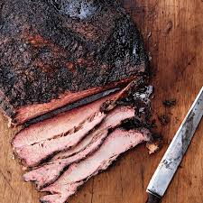

Brisket Recipe
Back to Home

Description
Nothing pleases a crowd more than expertly cooked brisket.
With this recipie, ad the right amount of patience, anyone can cook a brisket like a true Texan pitmaster.
Ingredients
- 1 whole brisket
- charcoal, wood, or pellet smoker
- BBQ seasoning of your choice
- Coarse salt, pepper, and garlic
- butcher paper
- drink cooler
Instructions
- Trim the fat from the brisket if not already done.
- Season liberally with your seasoning (you can never add enough).
- Season further with a top coat of salt,pepper, and garlic.
- Let rest for 1-2 hours at room temperature.
- Set smoker to 200 degrees F and place brisket fat side down.
- Let the smoker work until brisket is at 160-170 degrees internal.
- Wrap in butcher paper and raise grill temperature to 225 degrees.
- Let it cook till 203 degrees internal temperature.
- Remove from smoker and place in cooler for 2-4 hours rest.
- Slice and serve.